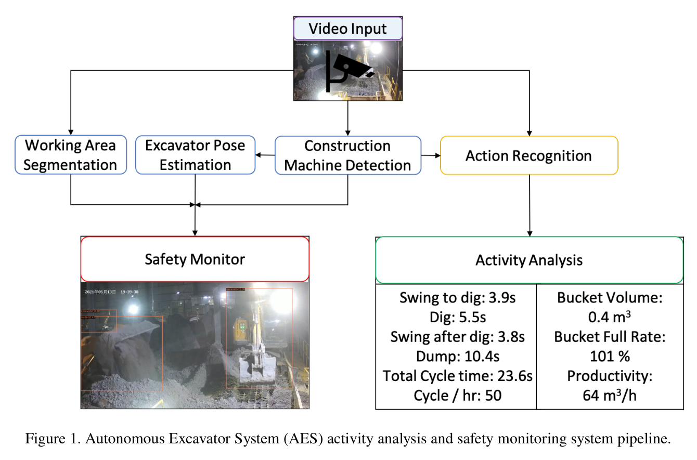
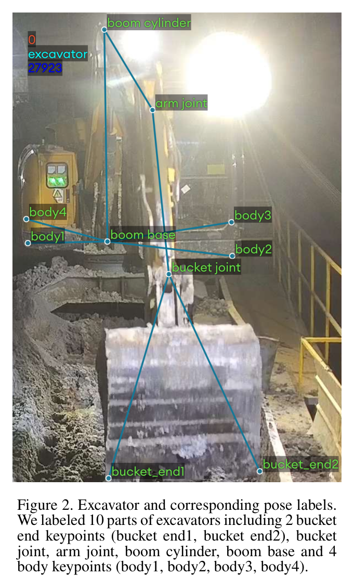
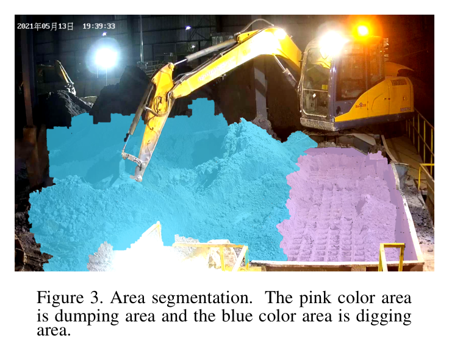
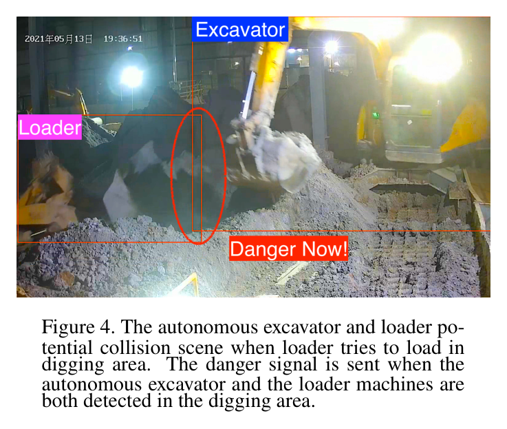
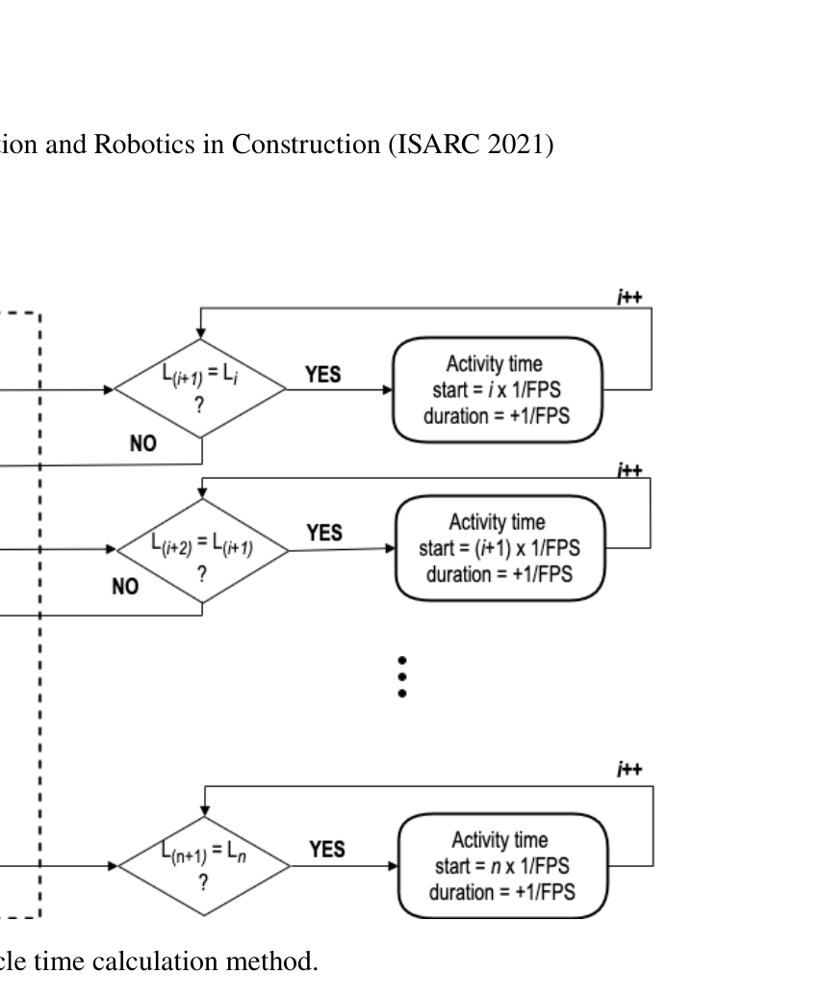
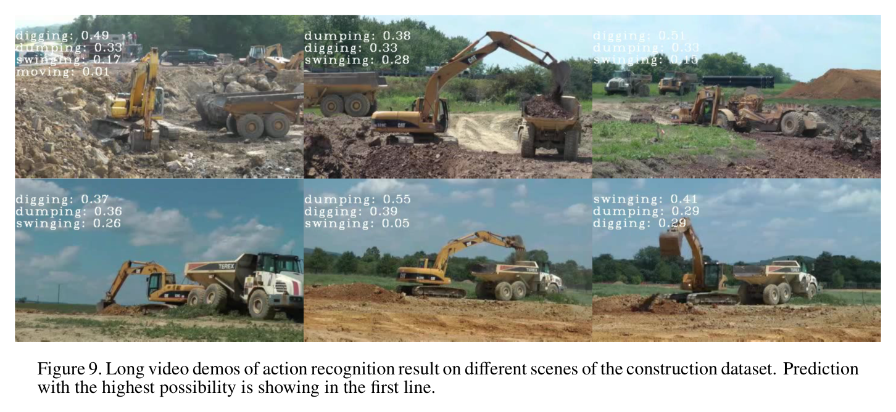
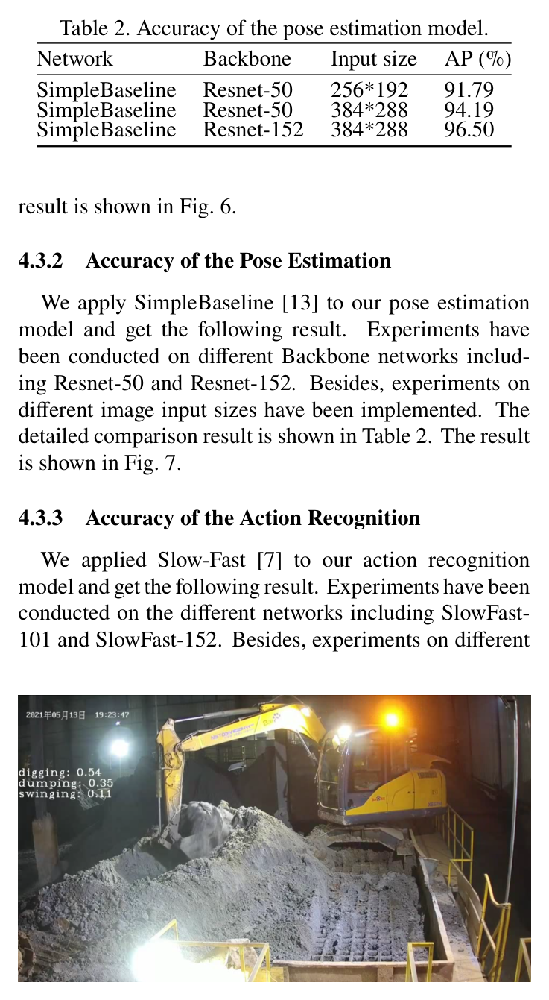
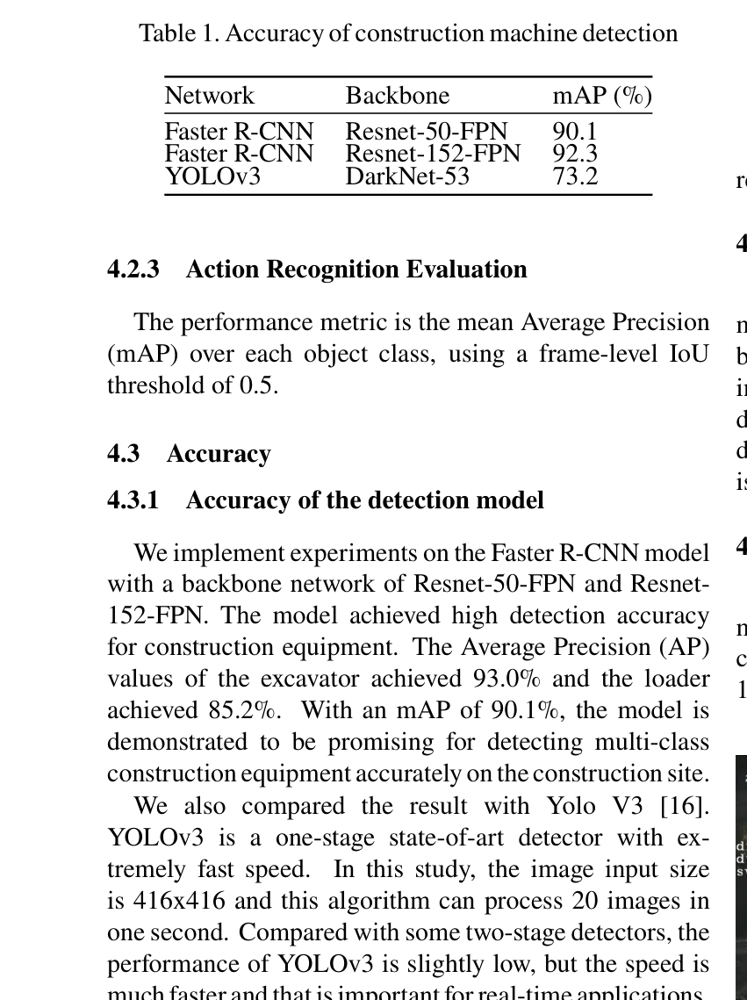
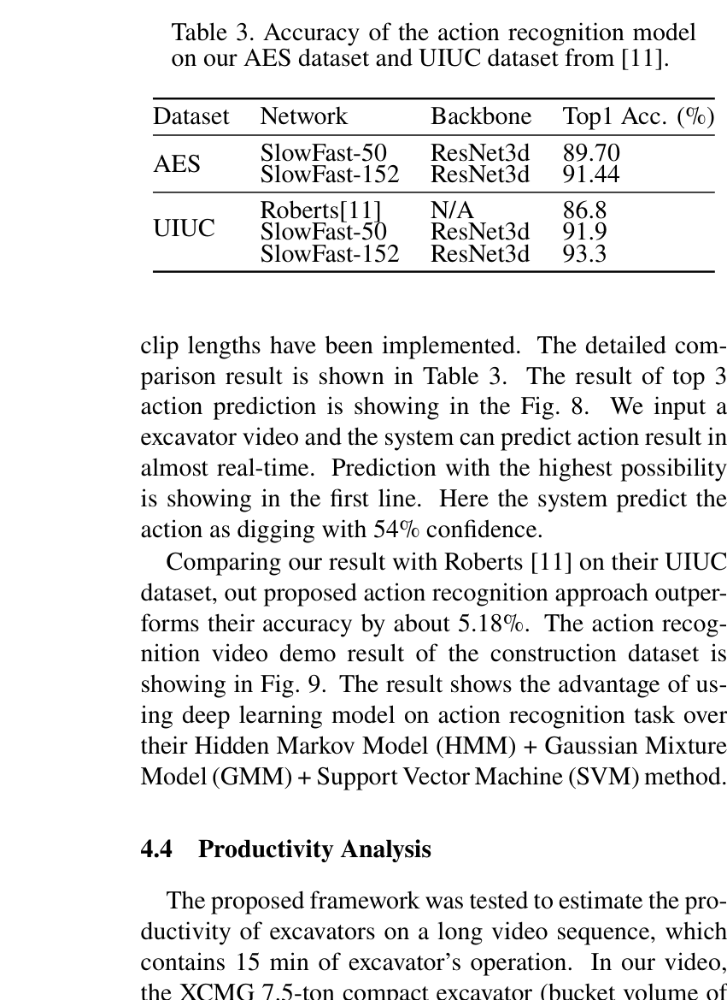

Vision-based Excavator Activity Analysis and Safety Monitoring System
Sibo Zhang, Liangjun Zhang · 38th International Symposium on Automation and Robotics in Construction (ISARC 2021)
한줄 요약 — 별도 마커·IMU 없이 현장 감시영상만으로 굴착기와 로더를 검출하고, 굴착기 부품 자세와 digging/dumping 영역, digging·swinging·dumping 행동을 통합해 동일 작업영역의 잠재 충돌을 경고하며 cycle time과 버킷 용량·충전율로 생산성을 산출하는 외부 안전·운영 분석 시스템이다.
1.연구 배경 및 동기
굴착기 내부 자율화 스택을 보완하는 외부 영상 안전·생산성 감독
폐기물 재활용 현장의 자율굴착기는 장시간 무인으로 재료를 굴착·덤핑할 수 있지만, 로더나 다른 장비가 작업영역에 들어오면 충돌 위험이 생긴다. 굴착기 자체 센서만으로는 넓은 현장의 상호작용을 항상 볼 수 없고, 별도 UWB·IMU·마커를 모든 장비에 설치하기도 어렵다. 논문은 현대 작업장에 흔한 고정 감시카메라 영상만으로 장비 종류, 굴착기 자세·행동, 잠재 충돌과 생산성을 함께 분석한다.
선행 연구는 작업자 안전장비 검출, 장비 분할, 굴착기 skeleton, 행동 인식, 궤적 기반 위험구역 등 개별 기능에 집중했다. 일부는 굴착기 상태를 고려하지 않았고, 일부는 단일 장비 자세만 추정해 주변 객체 영향을 다루지 않았다. 제안 시스템은 작업영역 segmentation, Faster R-CNN 검출, 10-keypoint pose, rule-based 상태판정과 SlowFast 행동인식을 하나의 pipeline으로 묶어 안전 pause와 생산성 계산까지 연결한다.

원문 Figure 1 · PDF p.2 — Figure 1. Autonomous Excavator System (AES) activity analysis and safety monitoring system pipeline.
선행 연구의 한계
마커·IMU·UWB 방식은 현장 장비마다 추가 설치와 유지가 필요하다.
기존 영상 연구는 검출·자세·행동·위험분석을 별도로 다뤄 굴착기 작업상태와 주변 장비를 함께 해석하지 못했다.
단순 위치·궤적 위험구역은 굴착기가 digging·swinging·dumping 중인지 반영하지 않는다.
기존 UIUC 행동모델의 정확도는 제안한 SlowFast 계열보다 낮았다.
이 연구의 기여
AES 폐기물 재활용 현장의 1시간 영상에서 장비·10개 자세점·영역·행동 label을 갖춘 데이터셋을 구축했다.
장비검출·굴착기 자세·작업영역·행동인식을 결합한 markerless perception pipeline을 제안했다.
동일 작업영역의 복수 장비를 경고·pause하고, 행동 label에서 cycle과 생산성을 산출하는 응용을 구현했다.
AES와 외부 UIUC construction dataset에서 검출·자세·행동 성능 및 15분 생산성 계산을 평가했다.
2.방법론 및 시스템 구성
입력은 고정 surveillance video다. segmentation이 digging area와 dumping area를 구분하고 Faster R-CNN이 excavator·loader의 class와 bounding box를 낸다. Soft-NMS가 중복 box를 제거하며, excavator crop은 SimpleBaseline 계열 ResNet pose network로 들어가 bucket end 2점, bucket joint, arm joint, boom cylinder, boom base, body 4점의 총 10개 keypoint를 출력한다.
안전 모듈은 segmentation 영역과 연속 frame의 keypoint 이동을 결합한다. body 1-4 평균 이동이 threshold보다 작으면 body가 정지한 것으로 보고, bucket/arm 위치와 이전 state로 digging, swing-after-dig, dumping, swing-for-dig, optional idle을 판정한다. 동시에 굴착기와 다른 장비가 같은 digging/working region에 검출되면 경보를 내고 자율장비를 pause할 수 있다.
생산성 분석은 더 일반적인 SlowFast video classifier가 digging·dumping·swinging label을 낸다. 연속 frame label이 유지되는 시간을 1/FPS씩 누적하고, 이웃한 digging 시작시각의 차로 cycle time을 구한다. 시간당 cycle 수에 제조사 bucket volume과 평균 bucket full rate를 곱해 m³/h를 계산한다.
처리 파이프라인
1
1. 작업영역 분할
ResNet 기반 segmentation으로 waste digging area와 지정 dumping area를 구분한다.
2
2. 장비 검출
Faster R-CNN이 excavator·loader box를 내고 Soft-NMS로 중복을 억제한다.
3
3. 굴착기 자세
검출 crop에서 bucket·arm·boom·body의 10개 corner keypoint를 추정한다.
4
4. 추적·정지 판정
연속 frame의 body 1-4 평균 이동과 threshold로 swing 여부를 판정한다.
5
5. 규칙 기반 상태
bucket/arm의 영역과 이전 state를 조합해 dig·swing·dump·idle을 정한다.
6
6. SlowFast 행동인식
Slow·Fast pathway가 공간 의미와 빠른 운동을 분리해 3개 행동을 분류한다.
7
7. 안전 경보
굴착기와 다른 장비가 같은 작업영역에 있으면 alert하고 자율장비를 pause한다.
8
8. cycle 추출
frame label 지속시간과 이웃 digging 시작시각 차로 작업주기를 계산한다.
9
9. 생산성 계산
cycle/h에 bucket volume과 평균 full rate를 곱해 시간당 체적을 얻는다.
PDF p.4. 행동 label에서 구한 시간당 cycle에 제조사 bucket 용량과 평균 충전율을 곱한다.
11-point Average Precision (Eq. 2)
AP=\frac{1}{11}\sum_{r\in\{0,0.1,\ldots,1\}}AP_r
PDF p.5. COCO 계열 검출 평가에서 recall 지점별 precision을 평균한다.

원문 Figure 2 · PDF p.3 — Figure 2. Excavator and corresponding pose labels. We labeled 10 parts of excavators including 2 bucket end keypoints (bucket end1, bucket end2), bucket joint, arm joint, boom cylinder, boom base and 4 body keypoints (body1, body2, body3, body4).

원문 Figure 3 · PDF p.3 — Figure 3. Area segmentation. The pink color area is dumping area and the blue color area is digging area.

원문 Figure 4 · PDF p.4 — Figure 4. The autonomous excavator and loader po- tential collision scene when loader tries to load in digging area. The danger signal is sent when the autonomous excavator and the loader machines are both detected in the digging area.

원문 Figure 5 · PDF p.5 — Figure 5. Excavator cycle time calculation method.
3.핵심 기술
10-keypoint 굴착기 자세 표현
사람 pose를 그대로 쓰지 않고 굴착기 구조에 맞춰 bucket end 2점, bucket·arm joint, boom cylinder·base, body corner 4점을 정의했다. 부품 중심이 아니라 corner를 label해 위치 정확도를 높이고, body 회전과 bucket/arm의 작업영역 진입을 상태 규칙에 직접 사용한다.
총 10 keypoint
검출 box 기반 pose
SimpleBaseline ResNet
body 4점 이동으로 swing 판정
영역·자세·이력 결합 상태기계
digging은 bucket/arm이 digging area에 있고 body가 정지한 상태, dumping은 dumping area에서 body가 정지한 상태다. body가 움직이면 이전 state에 따라 swing-to-dump 또는 swing-to-dig로 나눈다. 영상 한 장이 아니라 영역·자세 시계열·이전 상태를 결합해 자율굴착의 작업 phase를 해석한다.
digging/dumping 영역
body 이동 threshold
이전 state로 swing 방향 구분
idle 선택상태
SlowFast 행동과 생산성 연결
Slow pathway는 낮은 frame rate의 공간 의미를, 가벼운 Fast pathway는 빠른 운동을 학습한다. frame 행동 label을 cycle 경계로 바꾸어 단순 분류 성능을 실제 m³/h 운영지표로 연결했다. 안전에는 해석 가능한 규칙형 상태를, 생산성에는 일반화 가능한 학습형 행동인식을 분리 사용한다.
3개 행동 class
AES·UIUC 평가
digging 시작점 간 cycle
bucket volume·full rate 결합
4.실험 결과
실험 환경·장비·데이터
AES 폐기물 재활용 현장의 1920×1080, 25 fps 영상 1시간을 수집했다.
601 image에 장비 box·굴착기 pose·background segmentation을 달고 80% train, 20% validation/test로 나눴다.
digging·dumping·swinging 102 clip을 label했다.
외부 UIUC dataset의 480×720, 25 fps, 479 interaction video도 행동평가에 사용했다.
원문 Figure 6 · PDF p.6 — Figure 6. Excavators and loader detection result. Our system is capable detecting multi-class construction machines in real-time.
원문 Figure 8 · PDF p.6 — Figure 8. Excavators long video action detection re- sult.

원문 Figure 9 · PDF p.7 — Figure 9. Long video demos of action recognition result on different scenes of the construction dataset. Prediction with the highest possibility is showing in the first line.
핵심 결과 해석
장비검출 mAP는 Faster R-CNN ResNet-50-FPN 90.1%, ResNet-152-FPN 92.3%로 YOLOv3 73.2%보다 높았다. ResNet-50 모델에서 excavator AP는 93.0%, loader AP는 85.2%였고, YOLOv3는 각각 80.2%, 60.2%였다. pose AP는 ResNet-50 256×192가 91.79%, 같은 backbone 384×288가 94.19%, ResNet-152 384×288가 96.50%로 입력·backbone 확대에 따라 높아졌다.
AES 행동 top-1은 SlowFast-50 89.70%, SlowFast-152 91.44%였다. UIUC에서는 Roberts 86.8%에 비해 SlowFast-50 91.9%, SlowFast-152 93.3%였고 논문은 약 5.18% 개선을 강조한다. 15분 영상의 XCMG 7.5톤 굴착기는 실제 40 cycle, bucket 0.4 m³, 평균 full rate 101%로 64.64 m³/h였다. 시스템은 39 cycle을 검출해 생산성 계산 정확도 97.5%를 얻었다.
실행속도는 검출 5 fps, pose 2 fps, 행동 1 fps였다. 시스템은 near-real-time이라고 설명하지만 가장 느린 행동모듈은 초당 한 번 갱신된다. 따라서 정적 생산성 분석에는 유용해도 빠르게 접근하는 장비의 충돌경보에는 별도의 지연 평가가 필요하다.
정량 결과
평가 항목
정량 결과
조건·맥락
원문 근거
Faster R-CNN 검출
mAP 90.1% / 92.3%
ResNet-50/152-FPN
PDF p.6
YOLOv3 검출
mAP 73.2%
DarkNet-53
PDF p.6
장비 class AP
excavator 93.0%, loader 85.2%
Faster R-CNN 결과
PDF p.6
최고 pose AP
96.50%
ResNet-152, 384×288
PDF p.6
AES 행동 top-1
89.70% / 91.44%
SlowFast-50/152
PDF p.7
UIUC 행동 top-1
91.9% / 93.3%
Roberts baseline 86.8%
PDF p.7
실제 작업
40 cycles / 15 min
XCMG 7.5 t, bucket 0.4 m³
PDF p.7
생산성
64.64 m³/h
평균 full rate 101%
PDF p.7
cycle 검출
39/40, 정확도 97.5%
15분 long video
PDF p.7
inference 속도
검출 5, pose 2, 행동 1 fps
NVIDIA M40 24GB
PDF p.7
실패 사례와 경계조건
같은 작업영역의 복수 장비라는 규칙은 상대속도·미래궤적·time-to-collision을 구분하지 못한다.
행동인식 1 fps와 pose 2 fps는 빠른 접근 위험에서 경보 지연을 만들 수 있다.
단일 AES 폐기물 장면의 작은 dataset은 다른 조명·먼지·시점·장비 형상에서 성능이 떨어질 수 있다.
cycle 1회를 놓쳐 실제 40회 중 39회만 검출했다.
5.한계 및 향후 연구
현재 한계
원문이 직접 밝힌 한계는 비교적 단순한 AES 폐기물 재활용 장면에서 수집한 dataset이 작다는 점이다.
충돌판단이 동일 segmentation 영역의 복수 장비 검출에 의존해 거리·상대속도·예측궤적을 사용하지 않는다.
안전 관련 module 속도가 1~5 fps이며 경보 latency·최소 정지거리·오경보율을 보고하지 않았다.
601 image와 102 clip의 단일 고정시점 중심 평가라 다중 카메라·가림·날씨·야간 일반화가 미확인이다.
향후 연구
다중 카메라 tracking과 trajectory prediction으로 time-to-collision과 최소이격을 예측해야 한다.
합성영상·자기지도 domain adaptation으로 조명·먼지·시점이 다른 현장 간 성능하락을 줄일 수 있다.
실시간 detector·pose·행동모델을 공동 최적화하고 end-to-end 경보 latency와 정지거리를 평가해야 한다.
사람·트럭·로더를 포함한 다중 객체 ID 추적과 위험도별 감속·정지·재개 정책으로 확장할 필요가 있다.
6.한마디로 정리
핵심 방법은?
감시영상의 영역분할·Faster R-CNN 검출·10-keypoint pose·SlowFast 행동을 결합해 안전상태와 cycle 기반 생산성을 계산한다.
핵심 결과는?
검출 mAP 최고 92.3%, pose AP 96.50%, UIUC 행동 93.3%를 얻고 15분 40 cycle 중 39회를 검출해 생산성 정확도 97.5%를 보였다.
한계는?
작은 단일현장 dataset, 동일영역 점유식 충돌규칙, 1~5 fps 처리속도로 동적 충돌예측과 OOD 현장 안전성은 입증되지 않았다.
이 시스템은 굴착기 내부의 LiDAR·계획·제어와 독립된 외부 안전감독 계층으로 쓸 수 있다. rank 41 TaskNet이 primitive를 실행하는 동안 외부 카메라가 loader나 작업자의 작업영역 침입을 감지하면 pause하고, 위험 해소 뒤 새 지형관측으로 계획을 재개할 수 있다. 행동 cycle과 rank 40 버킷 체적을 결합하면 단순 cycle 수가 아니라 실제 m³/h·저충전률·대기시간을 포함한 생산성 분석도 가능하다.
TaskNet primitive state와 외부 영상 행동 label을 교차검증해 오동작·상태 불일치를 탐지한다.
경보를 유압 안전정지와 연결하되 위험 해소 후 재관측·재계획 절차를 둔다.
버킷 실측체적×cycle로 고정 101% full-rate 가정 대신 실제 생산성을 계산한다.
향후 TTC·궤적예측을 추가해 동일영역 binary 경보를 위험도 기반 감속·정지로 확장한다.
7.전체 그림·표
본문 핵심 위치에 배치하지 않은 원문 Figure와 Table을 원문 페이지 순서로 수록한다.

원문 Table 2 · PDF p.6 — Table 2. Accuracy of the pose estimation model. Network Backbone Input size AP (%) SimpleBaseline Resnet-50 256*192 91.79 SimpleBaseline Resnet-50 384*288 94.19 SimpleBaseline Resnet-152 384*288 96.50

원문 Table 1 · PDF p.6 — Table 1. Accuracy of construction machine detection

원문 Table 3 · PDF p.7 — Table 3. Accuracy of the action recognition model on our AES dataset and UIUC dataset from [11].